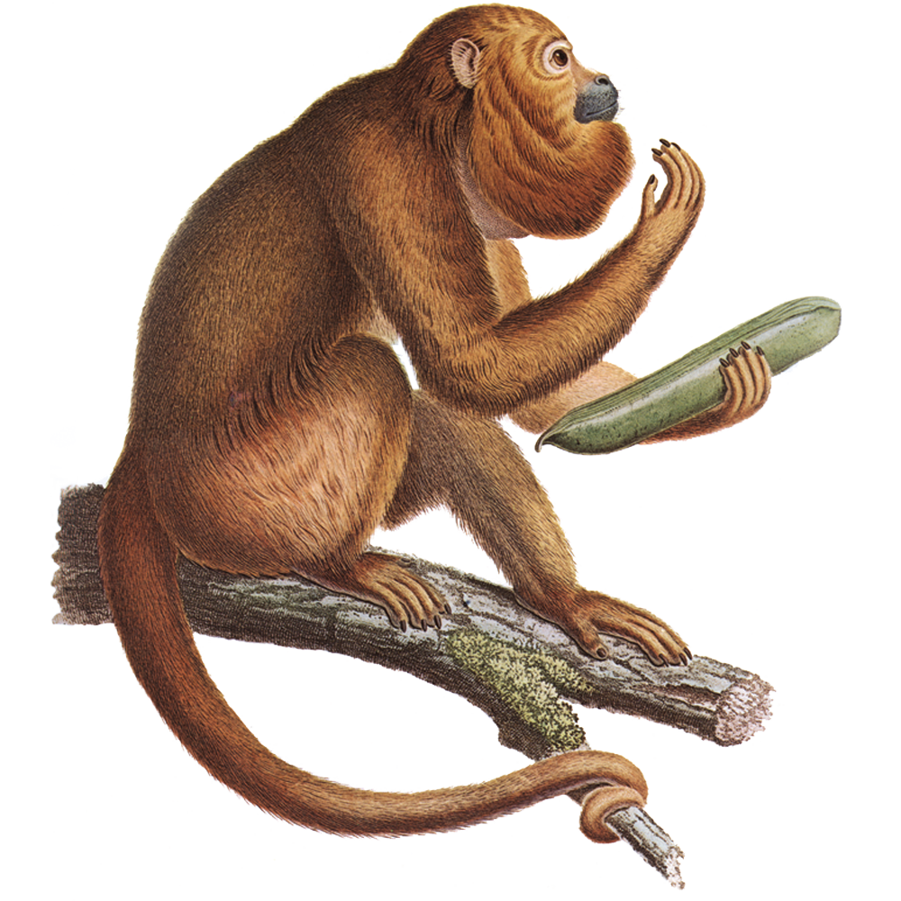
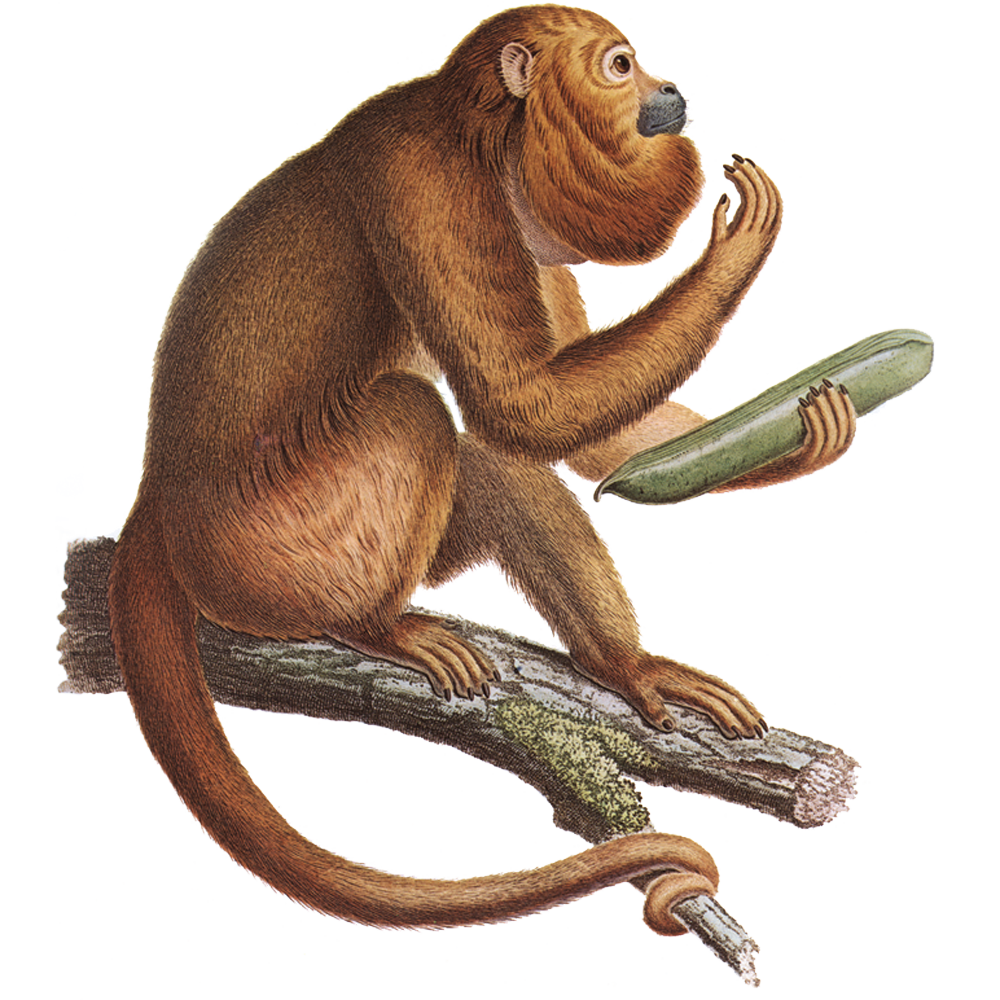

ARAGUATO
 

Descripción
El araguato (Alouatta seniculus), conocido también como mono aullador rojo, es el primate con el sistema vocal más desarrollado del Nuevo Mundo, cuyos potentes aullidos al amanecer resuenan hasta 5 km a través de la espesura amazónica. Este habitante de las copas arbóreas, con su pelaje rojizo que parece incendiarse bajo el sol tropical y su barba de patriarca selvático, ha perfeccionado el arte de vivir entre las alturas, desarrollando adaptaciones únicas que lo convierten en uno de los folívoros más especializados del reino animal. Su nombre indígena significa "el que anuncia el día", y no hay metáfora más exacta para este primate cuya voz marca el pulso circadiano de la selva.
Distribución y hábitat
El territorio del araguato se extiende desde el sur de México hasta el norte de Argentina, ocupando principalmente bosques húmedos tropicales por debajo de los 1,000 metros de altitud. En Venezuela, donde es conocido como "mono cotudo", forma parte fundamental de la fauna de los llanos y selvas de Guayana, mientras que en Colombia prefiere las riberas de los grandes ríos como el Orinoco y el Amazonas. Estos primates han desarrollado una especial afinidad por los bosques de galería y las zonas de rebalse, donde la diversidad vegetal garantiza alimento todo el año.
Estudios de radiotelemetría han revelado que un grupo familiar ocupa en promedio 25 hectáreas de selva, desplazándose diariamente entre 300-800 metros en busca de alimento. Lo extraordinario es su capacidad para evaluar la calidad nutricional del follaje a distancia, seleccionando árboles específicos incluso cuando están separados por cientos de metros de vegetación aparentemente similar. En zonas fragmentadas por actividad humana, han demostrado una resiliencia sorprendente, adaptándose a corredores riparios y bosques secundarios donde otros primates no sobreviven.
Alimentación
La dieta del araguato es un prodigio de adaptación fisiológica. Como uno de los pocos primates folívoros estrictos, consume principalmente hojas maduras (60-70% de su dieta), seleccionando especies vegetales con altos niveles de toxinas que otros animales evitan. Su secreto radica en un sistema digestivo que parece robado de un rumiante: un intestino grueso hipertrofiado que alberga bacterias simbióticas capaces de descomponer celulosa y neutralizar alcaloides tóxicos.
Estos monos complementan su dieta con frutas maduras (especialmente higos silvestres), flores y ocasionalmente corteza, mostrando preferencias estacionales marcadas. Durante la época seca, cuando el follaje nuevo escasea, pueden pasar semanas alimentándose casi exclusivamente de hojas viejas, un recurso que ignoran el resto del año. Su ritual alimenticio es metódico: examinan cada hoja con los labios antes de ingerirla, rechazando sistemáticamente aquellas con niveles excesivos de taninos. Investigaciones en la Estación Biológica de los Llanos (Venezuela) descubrieron que los araguatos prefieren árboles del género Ficus y Cecropia, cuyas hojas contienen compuestos que estimulan su flora intestinal.
Características físicas
El diseño corporal del araguato está optimizado para la vida arbórea y la producción de sonidos estruendosos. Los machos adultos, que pueden pesar hasta 9 kg (el doble que las hembras), poseen un hueso hioides hipertrofiado que actúa como caja de resonancia, convirtiendo su garganta en una cámara de amplificación natural. Sus aullidos, que pueden alcanzar 140 decibeles (equivalente a un concierto de rock), son producidos sin esfuerzo aparente gracias a un sistema de sacos aéreos conectados a las vías respiratorias.
Sus manos prensiles, con pulgares oponibles y uñas planas en lugar de garras, son herramientas perfectas para el desplazamiento lento y metódico entre ramas. La cola, completamente prensil y más larga que el cuerpo (hasta 80 cm), funciona como quinta extremidad, capaz de soportar todo su peso mientras se alimenta en las copas más externas. El pelaje, de tonalidades que varían del rojo cobrizo al dorado oscuro según la subespecie, está impregnado de aceites que lo hacen resistente al agua durante las lluvias tropicales.
Un rasgo único es su visión tricromática (rara entre los mamíferos), que les permite distinguir matices de verde para evaluar la calidad nutricional del follaje. Los machos adultos desarrollan una barba prominente de pelo más largo, que según estudios etológicos juega un papel en la selección sexual y el reconocimiento individual dentro del grupo.
Comportamiento
La vida social de los araguatos gira en torno a coros matutinos que sirven tanto para demarcar territorio como para coordinar actividades grupales. Un grupo típico consta de 3-12 individuos (1-3 machos adultos, varias hembras y sus crías), con una jerarquía basada en antigüedad más que en agresión. Los machos emprenden "duelos vocales" con grupos vecinos, donde el volumen y duración de los aullidos determina cuál banda mantendrá el control de los árboles más productivos.
Contrario a la mayoría de primates, los araguatos son notablemente sedentarios, pasando hasta el 70% del día descansando para permitir la lenta digestión de su dieta fibrosa. Cuando se mueven, lo hacen con deliberada parsimonia, conservando energía en un entorno donde las hojas proporcionan pocas calorías. Las hembras muestran comportamientos cooperativos en el cuidado de crías, permitiendo que los juveniles de otras madres se acerquen e incluso los transporten brevemente, un rasgo poco común en primates no humanos.
Estudios en Guyana Francesa han documentado que pueden anticipar tormentas tropicales, descendiendo de los árboles más altos horas antes de que lleguen los vientos fuertes, sugiriendo una sensibilidad barométrica desarrollada.
Reproducción
El ciclo reproductivo del araguato es tan lento como su estilo de vida. Las hembras entran en celo cada 16-20 meses, atrayendo a los machos con secreciones odoríferas y vocalizaciones específicas. El apareamiento es breve y discreto, ocurriendo típicamente en las ramas más gruesas del dosel superior.
Tras una gestación de 186 días (excepcionalmente larga para un primate de su tamaño), nace una sola cría que se aferra instintivamente al vientre materno. Lo extraordinario es el sistema de crianza compartida: a las 2-3 semanas, la cría comienza a montar también a otros miembros del grupo, incluyendo machos adultos, que muestran una tolerancia inusual hacia los infantes. El destete se completa alrededor de los 18 meses, pero los jóvenes permanecen con el grupo natal hasta los 3-4 años, aprendiendo los complejos mapas mentales de recursos alimenticios.
Las hembras alcanzan la madurez sexual a los 5 años, los machos a los 7, con una longevidad máxima registrada de 25 años en cautiverio (15-20 en libertad). Esta estrategia de "inversión parental extendida" resulta en una de las tasas reproductivas más bajas entre primates, compensada por una alta supervivencia juvenil en ambientes estables.
Defensa y depredadores
A pesar de su tamaño, los araguatos enfrentan numerosas amenazas naturales. Las águilas arpías (Harpia harpyja) son sus principales depredadores aéreos, mientras que los ocelotes (Leopardus pardalis) y las boas constrictoras (Boa constrictor) los cazan desde el sotobosque. Su principal estrategia defensiva es el camuflaje y la quietud absoluta - pueden permanecer inmóviles durante horas cuando detectan peligro.
Cuando son acorralados, los machos adultos emiten rugidos intimidatorios y pueden defecar u orinar sobre el agresor desde las alturas. Los grupos establecen "árboles refugio" preferenciales, con denso follaje y ramas difíciles de escalar, donde pasan las noches en relativa seguridad. La mayor amenaza actual es la fiebre amarilla, que ha diezmado poblaciones enteras en Brasil, y la fragmentación de hábitats que los expone a perros ferales y cazadores.
Datos curiosos
- Su hueso hioides es hueco y del tamaño de una pelota de golf, único entre primates.
- Pueden distinguir más de 50 especies de árboles por el sabor de sus hojas.
- Los gemelos son extremadamente raros (1 cada 500 nacimientos).
- Su tracto digestivo mide 8 veces la longitud de su cuerpo.
- En Trinidad, donde no hay depredadores naturales, han desarrollado aullidos más cortos.
Estado de conservación
Catalogado como "Preocupación Menor" globalmente pero en declive en varias regiones, el araguato enfrenta presiones crecientes por deforestación y caza (su carne es considerada "salvaje" en algunas culturas rurales). En Colombia y Venezuela, proyectos como el "Corredor de Primates" buscan conectar fragmentos boscosos cruciales para su supervivencia.
Paradójicamente, su lenta tasa reproductiva lo hace vulnerable incluso en áreas protegidas. Sin embargo, su capacidad para vivir en bosques secundarios y consumir plantas pioneras lo convierte en un potencial aliado para la regeneración ecológica. Estos cantores de la selva, cuyos aullidos han resonado por millones de años, siguen siendo centinelas de la salud de los bosques tropicales, recordándonos que la conservación debe escuchar tanto como ver.